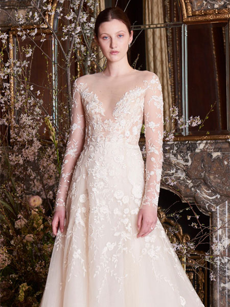

. في مجموعة فساتين الزفاف لعام سنشاهد الكثير من لمسات الأزهار، باللون الأبيض وبعدة ألوان مختلفة. وشملت المجموعة فساتين زفاف مطرزة باللون الزمردي والأبيض في نمط مستوحى من صدرية الرجال في القرن ال 18، فضلاً عن التصاميم الملونة باللون الوردي وبأقمشة دانتيل جوبير.
تمحورت مجموعة فساتين الزفاف لخريف 2018 من تصميم كارولينا هيريرا حول التصاميم العصرية الخالدة، فقد شاهدنا المعاطف الصغيرة التي تغطي الأكتاف والتي تميزت بياقات عالية، بالإضافة إلى فساتين زفاف بجيوب أنيقة، والتنانير متعددة الطبقات والمصنوعة من التول. يكون أعلى الجسم واسعا و الظهر عريض مع ضئالة في منطقة الأوراك و الخصر. . .

أطلقت مصممة الأزياء العالمية كارولينا هيريرا مجموعة فساتين الزفاف لعام 2018 وذلك خلال فعاليات أسبوع الموضة في نيويورك.
تقول كارولينا هيريرا: "أعتقد أن الطراز القديم في فساتين العرائس يعود مجدداً". وللتأكيد على الرومانسية الخالدة من حلال مجموعتها، بدأت المصممة الشهيرة عرضها بمقطع من قصيدة اللورد بايرون "انها تمشي بجمال.".

كوني على إطلاع على أحدث صيحات الموضة عندما يتعلق الأمر باختيار فساتين برنسيس، لذا ننصحك بأن تلقي نظرة على مجموعات فساتين الزفاف التي جمعناها خصيصاً لك لمساعدتك في اختيار فستان بقصة برنسيس يتماشى مع ذوقك ويمنحك إطلالة خلابة تخطف الأنظار في أهم يوم من أيام حياتك.علن مصمم الأزياء الموهوب ألفريد انجلو عن إطلاق فستان الزفاف المستوحى من قصة سندريلا، والذي تزامن مع إطلاق فليم سندريلا الجديد.
استلهم ألفريد انجلو تصميم فستان الزفاف من الفستان الذي ارتدته الممثلة ليلي جيمس، وهي الممثلة التي قدمت شخصية سندريلا في الفيلم الشهير.
حيث تألقت ليلي جيمس بفستان ساحر من تصميم المبدعة ساندي باول، وما جعل هذا الفستان مميزاً أكثر من غيره هو أنه مرسوم باليد! إليك الفستان الساحر من فيلم سندريلا:.

وأضاف ألفريد انجلو فستان الزفاف المستوحى من فيلم سندريلا، إلى مجموعته التي أطلقها مسبقاً هذا العام والتي حملت اسم "أميرات ديزني" حيث قدم من خلالها فستان زفاف ساحر مستوحىً من فيلم فروزين الشهير.
أعلن ألفريد انجلو أن الفستان سيكون متاحاً بثلاثة ألوان: الذهبي الفاتح مع الأزهار الملونة، الأبيض، أو العاجي. كما سيكون للعروس فرصة اختيار التصميم الذي يناسبها، حيث سيكون متوفراً بأكمام أنيقة مصنوعة من الأورجانزا أو فستان زفاف دون أكمام.
إن كنت ترغبين بالحصول على إطلالة مستوحاة من الأميرات في حفل زفافك، فإن فستان زفاف المستوحى من فيلم سندريلا مثالي لك. إليك عزيزتي العروس فستان زفاف باللون الأبيض والمستوحىً من سندريلا بتوقيع ألفريد انجلو:.
يتميز فستان الزفاف المصنوع من الساتان الراقي بتنورة ملفتة مزينة بالكريستال الرائع، مع زخارف من الدانتيل الرقيق تزين الذيل المتدرج، والقطعة العلوية. وللحصول على إطلالة مثالية، تم تصميم الياقة العريضة فوق قطعة علوية ضيقة. بدلة بأكمام طويلة شفافة مع ياقة باتو الواسعة، والمزينة بزخارف الدانتيل، تباع بشكل منفصل. الفستان متاح للأحجام الكبيرة.

2022
وينسلت
زخارف من الدانتيل المزين بالخرز وكريستال سواروفسكي ينسدلان بنعومة على القطعة العلوية من فستان زفاف الأميرات هذا، مما يتماشى بإناقة مع الأكمام المنسدلة على الأكتاف، والياقة الواسعى، والظهر المكشوف. تبدو أيضاً زخارف دانتيل واضحةً في تنورة الفستان المصنوعة من التول، لتكمل البهجة الرومانسية لهذه الإطلالة. زينت أزرار الكريستال ظهر الفستان. الفستان متاح للأحجام الكبيرة.
.